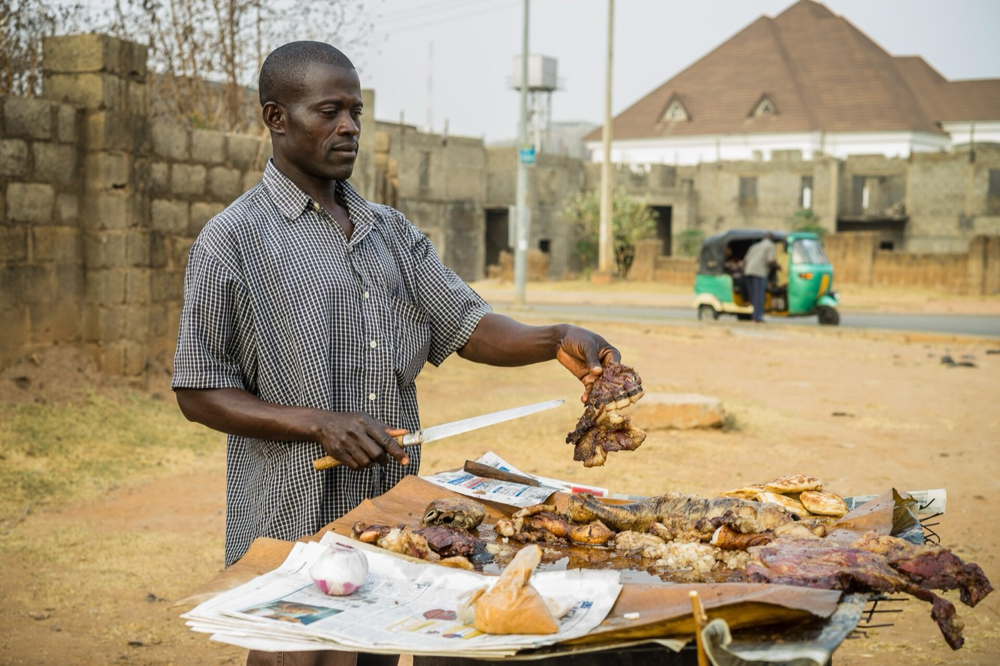
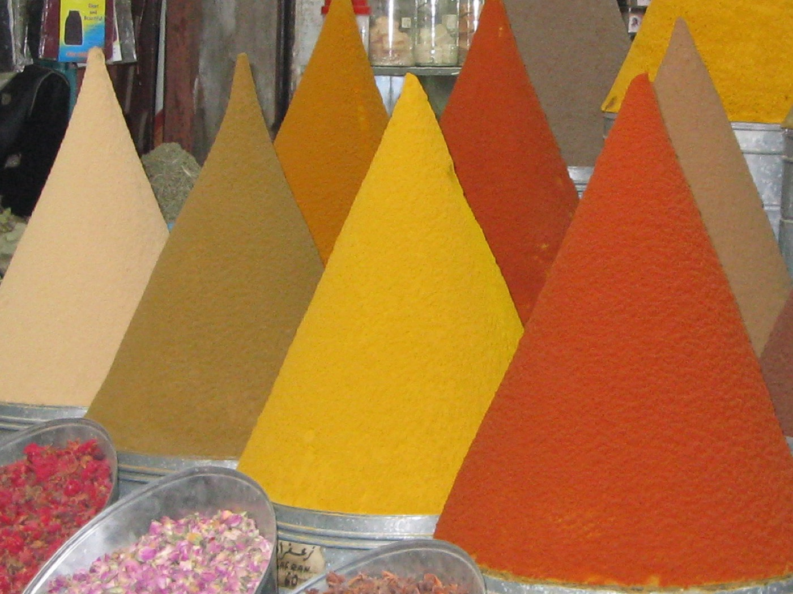
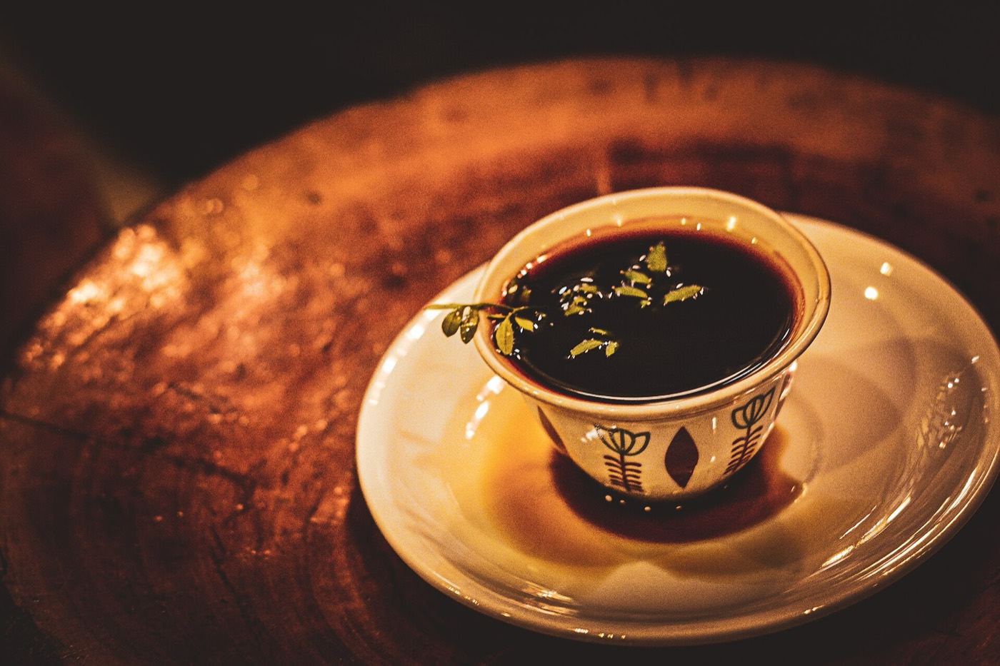

Stories about the people, ingredients and journeys behind African food.
Street Food
The Rise of African Street Food

A suya seller at work.
In cities across Africa, some of the best food has no dining room at all. It comes from a charcoal grill on a street corner, a cart outside a bus station or a stall that opens at dusk. Street food has long fed workers and students quickly and affordably, and it has become a source of real civic pride.
In Nigeria, the sharp smell of suya signals the evening. Thin strips of beef are coated in a spicy groundnut seasoning called yaji and grilled over open flames, a craft closely associated with Hausa cooks in the north. In Kampala, a rolex is an omelet with vegetables rolled in a chapati. Its name is a play on "rolled eggs", and it has become a proud symbol of Ugandan street life. In Cairo, koshari layers rice, lentils and pasta beneath a spiced tomato sauce and crisp onions.
These dishes tell stories of migration and invention. The chapati in a rolex reflects the Indian presence in East Africa, and Durban's bunny chow grew from its Indian South African community. Today, social media is carrying these foods to wider audiences, as vendors and young food writers share them far beyond their neighborhoods.
Traditional African Ingredients That Shape Our Cuisine

Ground spices for sale in Marrakesh, Morocco.
Before a dish can tell a story, its ingredients must grow somewhere. A handful of them explain a surprising amount about how the continent eats.
Teff
This tiny grain from the Horn of Africa is naturally gluten-free and is the traditional flour for Ethiopian and Eritrean injera.
Cassava
Originally from South America, cassava became a staple across much of Africa. Its roots give fufu and garri, and in Rwanda and its neighbors the leaves become stews like isombe.
Red palm oil
Pressed from the fruit of the African oil palm, it gives many West and Central African dishes their color and distinctive aroma.
Egusi
These protein-rich melon seeds are ground to thicken soups, creating the nutty, satisfying texture of egusi soup.
Spice blends and preserved lemons
Ethiopia's berbere combines chili with warm spices, and Morocco's ras el hanout is traditionally a shop's selection of its best spices. Preserved lemons, cured in salt, bring a bright, savory note to North African cooking.
How African Food Is Influencing Global Culinary Culture

Coffee, served in the style of the Ethiopian and Eritrean coffee ceremony.
African food has been shaping the world's plates for centuries, often without credit. Your morning coffee is the most familiar example: the Arabica plant is native to the Ethiopian highlands, and few drinks have traveled further.
The history of the Americas is tied to the continent in more painful ways. Enslaved Africans carried agricultural skill and culinary knowledge across the Atlantic. Okra, black-eyed peas and rice-growing expertise all played their part in the foodways of the American South, the Caribbean and Brazil. Gumbo's very name is generally traced to an African word for okra.
Today's influence is more visible. Ethiopian restaurants have introduced many diners to eating from a shared platter. Teff is sold around the world as a gluten-free grain, and harissa has become a common ingredient far from North Africa. Peri-peri chicken, which grew out of the Portuguese encounter with Mozambique and Angola, has reached a global audience through restaurant chains.
A new generation of chefs and writers from Africa and its diaspora is now telling these stories themselves, and presenting the continent's food on its own terms.